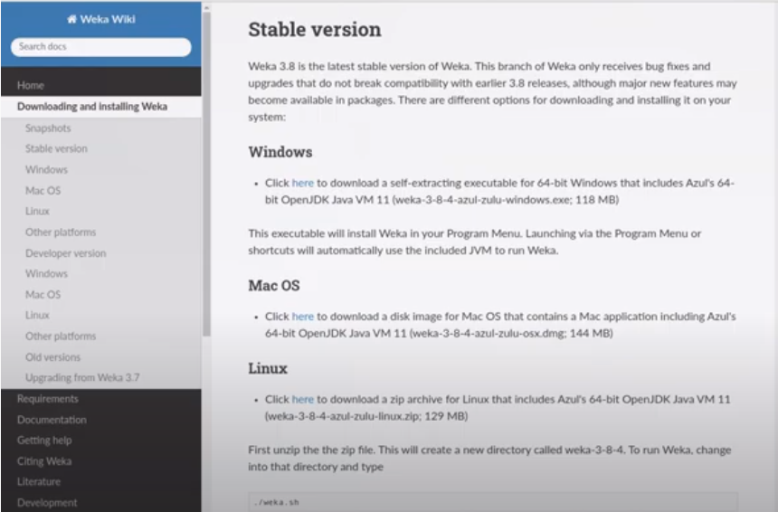
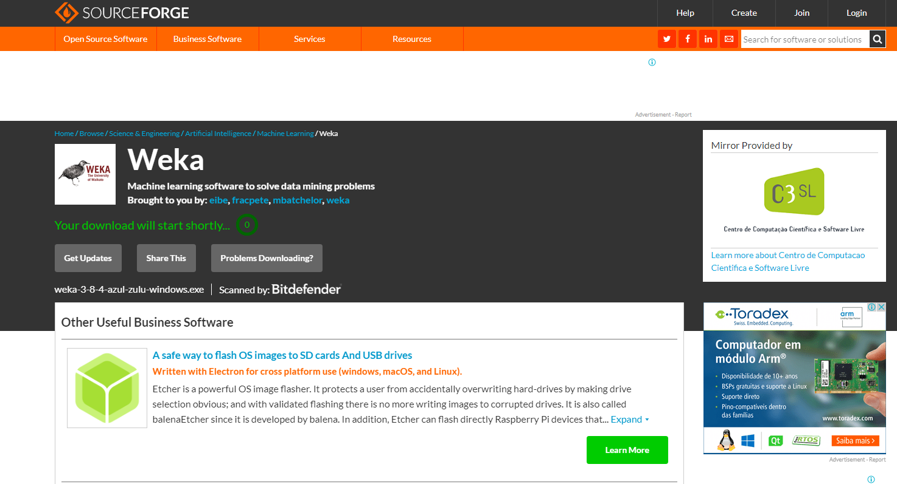
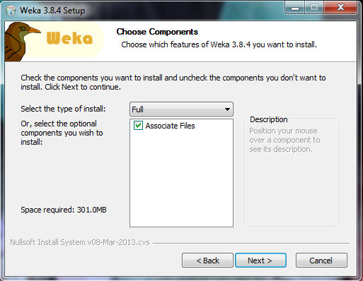
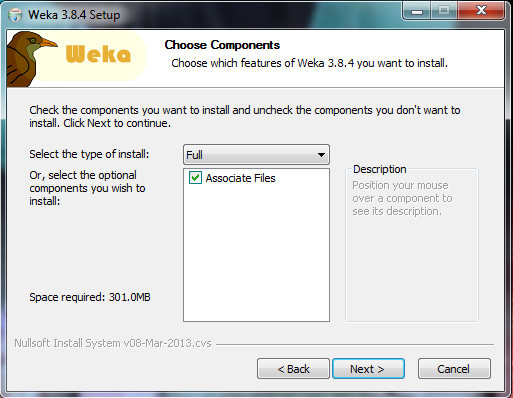

Weka é um Software livre do tipo open source para mineração de dados, desenvolvido em Java. Ao longo dos últimos anos se consolidou como a ferramenta de mineração de dados mais utilizada em ambiente acadêmico. Embora a ferramenta possua como ponto forte a mineração de classificadores em bases de dados, também pode ser utilizada para executar outras tarefas, especialmente a mineração de regras de associação. A ferramenta Weka trabalha com arquivos de entrada no formato ARFF, que corresponde a um arquivo texto contendo um conjunto de observações, precedido por um pequeno cabeçalho. O cabeçalho é utilizado para fornecer informações a respeito dos campos que compõem o conjunto de observações. É importante observar que o formato ARFF foi originalmente proposto para a mineração de classificadores; no entanto, ele pode ser "adaptado" para a mineração de regras de associação. Essa adaptação resulta em uma base de dados com uma estrutura um pouco esquisita, porém capaz de ser manipulada pela ferramenta.
Exemplo:Cabeçalho:
@relation "Transacoes" - Declaração Da Redação
@attribute I1 {y, n}
@attribute I2 {y, n}
@attribute I3 {y, n}
@attribute I4 {y, n}
@attribute I5 {y, n}
@attribute I6 {y, n}
Dados:
@data
y,y,?,?,y,?
?,y,?,y,?,?
?,y,y,?,?,?
y,y,?,y,?,?
y,?,y,?,?,?
?,y,y,?,?,?
y,?,y,?,?,?
y,y,y,?,y,?
y,y,y,?,?,?
As declarações dos atributos são feitas através de uma sequência de linhas @attribute. A ordem da declaração indica a posição de cada atributo na seção data. A base de dados é colocada abaixo do parâmetro @data. Consiste em uma lista de todas as instâncias com os valores dos atributos para cada instância, separados por vírgulas. Cada um em uma linha única. Os atributos devem aparecer na ordem em que são declarados no cabeçalho.
A árvore de decisão é uma ferramenta utilizada pra ajudar as pessoas ou equipes, a tomarem decisões a partir de analises, ramificações e possíveis resultados. Guiando as pessoas para encontrar possíveis soluções de um problema, ou a se prevenirem elaborando um plano de ação. Tento um comço e um fim, mesmo que os resultados finais sejam diferentes, sem deixá-los abertos. Constituída por nós, começa com o nó inicial, conhecido como Raiz, e se divide em outros nós, cada um representando uma possível opção, que pode de levar para uma outra opção, dependendo de sua resposta, ou até mesmo à um resultado final.
Uma árvore de decisão por conta própria não é aprendizado de máquina, pois é possível o desenvolvimento de um sem o uso do computador, com a principal função de organizar as ideias e tomar uma decisão. Exemplo: em uma companhia que está desenvolvento uma campanha de marketing de um produto, os funcionários podem montar uma árvore de decisão para decidirem uma estrátegia para a campanha, e chegar em um resultado, numa conclusão, mais benéfico para a companhia. E na área do aprendizado de máquina, o computador constrói uma árvore de decisão a partir dos dados fornecidos pelo usuario, onde utiliza um desses dois tipos de métodos: Método Supervisionado: aonde a análise é feita baseada nas informações já fornecidas pelo usuário. Esse método possui duas subcategorias: Classificação: ela recebe uma entrada e caracteriza de acordo com algum rótulo pré-definido. Utilizado mais quando a classificação é simples, podendo ser Sim ou Não. Regressão: assim como a classificação, ela recebe uma entrada, mas diferente da outra subcategoria, essa é utilizada para responder perguntas mais específicas, exemlo "Quanto está custando?" ou "Quantos desse tipo existem?". Método Não Supervisionado: aonde não há informações pré-definidas, tento o objetivo de encontrar características idênticas entre os dados fornecidos e os agrupar de acordo com elas.
Está tabela representa um mercado com seus devidos produtos, e 10 clientes que visitam esse mercado para fazer compras, o Suporte, é o cálculo de quantas vezes um item apareceu sobre a base, por exemplo, o café, de 10 pessoas que compram no mercado, 3 delas levam café, então o Suporte dele é de 30%, pois de todas as compras realizadas pelos clientes, foi calculado que 30% delas tinham café como um dos produtos adquiridos.
Já quando ao valor de Confiança, é calculado quantas vezes um produto é comprado em conjunto com outro, nesse cenário por exemplo com o foco nos produtos pão e manteiga, onde é registrado que sempre que um cliente compra pão ele também compra manteiga, mas não é todo mundo que compra os mesmos produtos sempre, como no outro caso com o café e o leite, 3 clientes compram esses 2 produtos, mas apenas um 1 comprou os dois ao mesmo tempo, neste caso o valor de Confiança calcula que cada 2 pessoas que compram café e leite, uma delas leva os dois.
Quando entrar na página inicial do Weka, e escolher o arquivo desejado, clica em Classify.
Na aba classifier, selecione a opção Choose.
Selecione a pasta tree e modelo J48.

Depois, selecione a opção Use Training Set e aperte Start.
Assim, os dados serão exibidos na aba ao lado.
Para visualizar a árvore de decisão, clique no botão direito no arquivo selecionado, na aba Result List, e selecione Visualize Tree.
E assim, a árvore de decisão será exibida. Exemplo de uma árvore de decisão.

Para instalar primeiro entre no site oficial do weka, https://www.cs.waikato.ac.nz/ml/weka/, e depois clica em download.
Depois você deve escolher a versão compativel com seu sistema operacional, aparecendo uma aba com as versões disponiveis.
Ao escolher a versão compatível ao seu computador, você será direcionado para a página será realizado o download.
Depois do download execute o instalador e clique na opção Next.

Aí escolhe os componentes que queremos instalar, deixe a opção Full e clique Next.
 


Escolha o diretório que deseja instalar o Weka. E aguarde o donwload, clique em Finish e pronto.